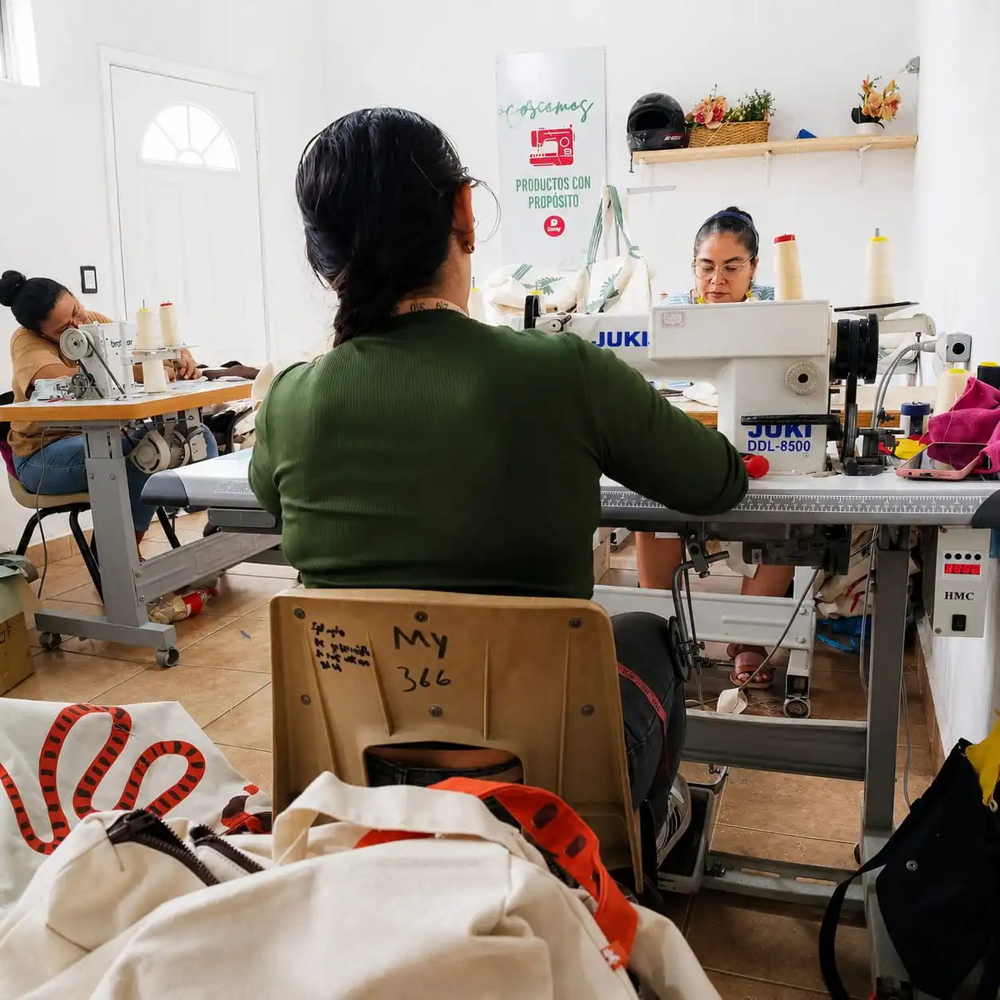
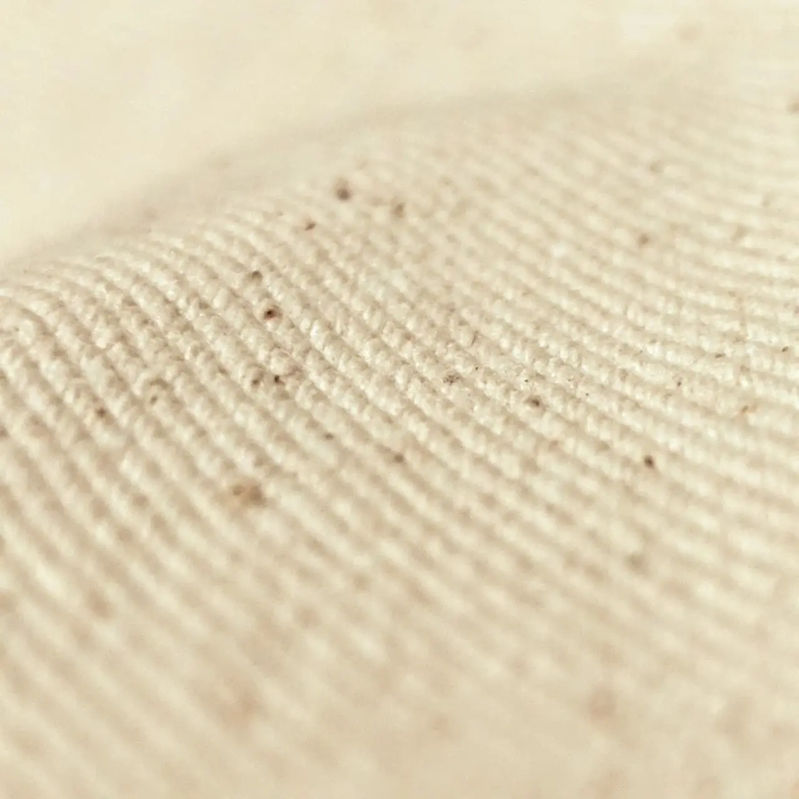
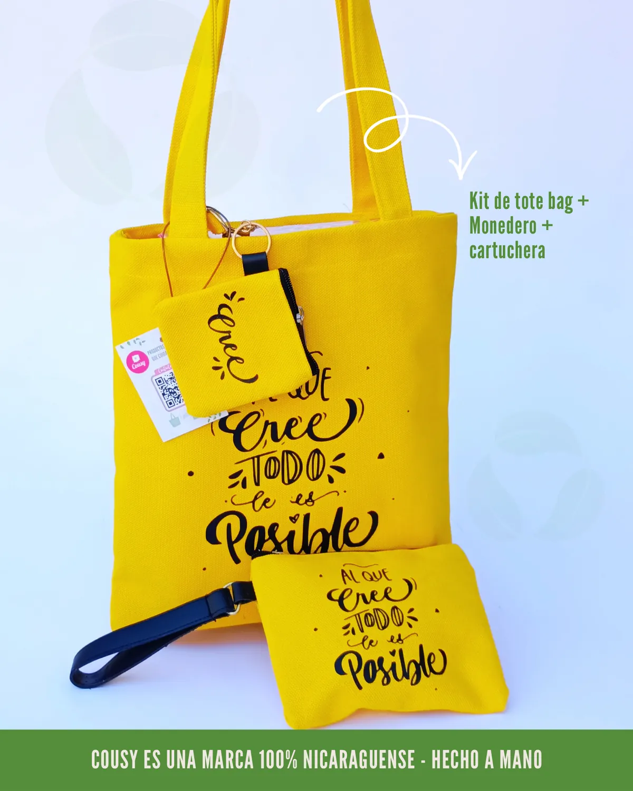
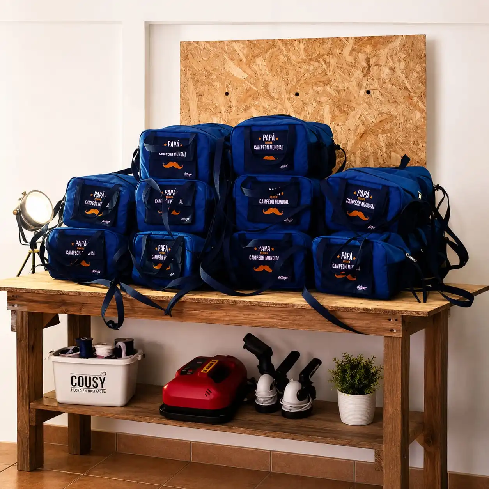

Materiales reutilizables
Priorizamos telas resistentes para reemplazar productos desechables en activaciones, eventos y kits corporativos.
Compromiso sostenible
Diseñamos productos textiles reutilizables y duraderos para marcas, instituciones y compras por volumen. Apostamos por procesos responsables y por el talento de la mano de obra nicaragüense.

150+
Lotes por año
15
Años de experiencia
Menos desperdicio
Diseño consciente
Más vida útil
Durabilidad real
Impacto local
Hecho en Nicaragua
Estrategia sostenible B2B
Como fabricante de productos promocionales sostenibles en Nicaragua, trabajamos para que cada pedido corporativo tenga durabilidad, uso real y menor impacto ambiental. Esta estrategia aplica a tote bags personalizadas, mochilas promocionales, loncheras corporativas y otros textiles reutilizables.
Priorizamos telas resistentes para reemplazar productos desechables en activaciones, eventos y kits corporativos.
Diseñamos costuras, cierres y asas para uso frecuente, buscando que cada pieza dure más tiempo en manos del usuario final.
Fabricamos en Nicaragua con equipo local, fortaleciendo empleo y conocimiento técnico en confección textil B2B.
Trabajamos por lotes según necesidad para reducir sobreproducción y evitar inventario innecesario en campañas promocionales.
Nuestro proceso busca alinear sostenibilidad, calidad y cumplimiento para compras corporativas por volumen, desde el brief inicial hasta la entrega local o internacional.
Definimos uso del producto, cantidades, tiempos y objetivos de marca para proponer la mejor solución.
Priorizamos opciones reutilizables y resistentes, con personalización acorde al branding de tu empresa.
El equipo de Cousy produce cada lote en Nicaragua con controles internos de costura y terminación.
Revisamos funcionalidad, medidas y presentación final para minimizar reprocesos y desperdicio.
Entregamos con logística local o internacional y acompañamos nuevos pedidos para continuidad sostenible.
Estos espacios están pensados para mostrar evidencia visual del proceso de Cousy Nicaragua. Puedes reemplazar cada bloque por imágenes del taller, productos terminados y entregas corporativas.

Equipo de costura en acción
Mostrar manos trabajando y detalle de confección en productos B2B.

Selección de materiales
Incluir tela, corte y control de calidad inicial.

Productos terminados
Tote bags, mochilas o loncheras listas para clientes corporativos.

Lotes corporativos listos para entrega
Ideal para mostrar volumen, empaque y consistencia de marca.
Apostamos por producción textil responsable en Nicaragua para que los regalos corporativos y productos promocionales no sean de un solo uso, sino una herramienta útil y duradera para cada marca.
Fabricación
Hecho en Nicaragua
Modelo operativo
Lotes por cotización
Uso esperado
Reutilización continua
Valor B2B
Branding con propósito
Actualizado: abril de 2026.
Resolvemos las dudas más comunes sobre materiales, personalización, tiempos y logística para pedidos B2B.
Principalmente su vida útil, reutilización frecuente y la calidad de confección. Un producto que dura más reemplaza opciones desechables y reduce reposiciones constantes.
Sí. Personalizamos tote bags, mochilas, loncheras y otros productos promocionales con identidad visual de marca para campañas corporativas y eventos institucionales.
Sí. Cousy Nicaragua trabaja en modelo B2B, con producción por lote y cotización previa para adaptar cantidades, tiempos y acabados a cada empresa.
Sí. Atendemos envíos locales en Nicaragua y coordinamos envíos internacionales para marcas y organizaciones en otros mercados.
Puedes ir a nuestra tienda, agregar productos a cotización y luego enviarnos el resumen desde cotización.
Mejora percepción de marca, utilidad real del obsequio, mayor recordación y coherencia con políticas de sostenibilidad corporativa.
Te ayudamos a definir productos, cantidades y personalización para campañas corporativas con enfoque sostenible y producción local responsable.
También puedes conocer más sobre nuestra historia en Nosotros.